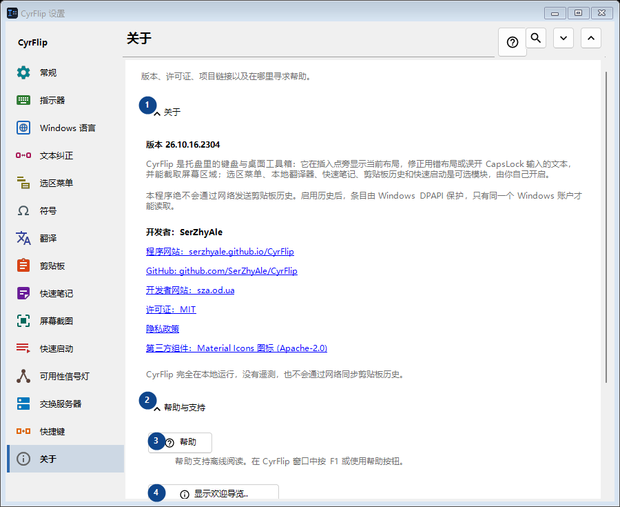
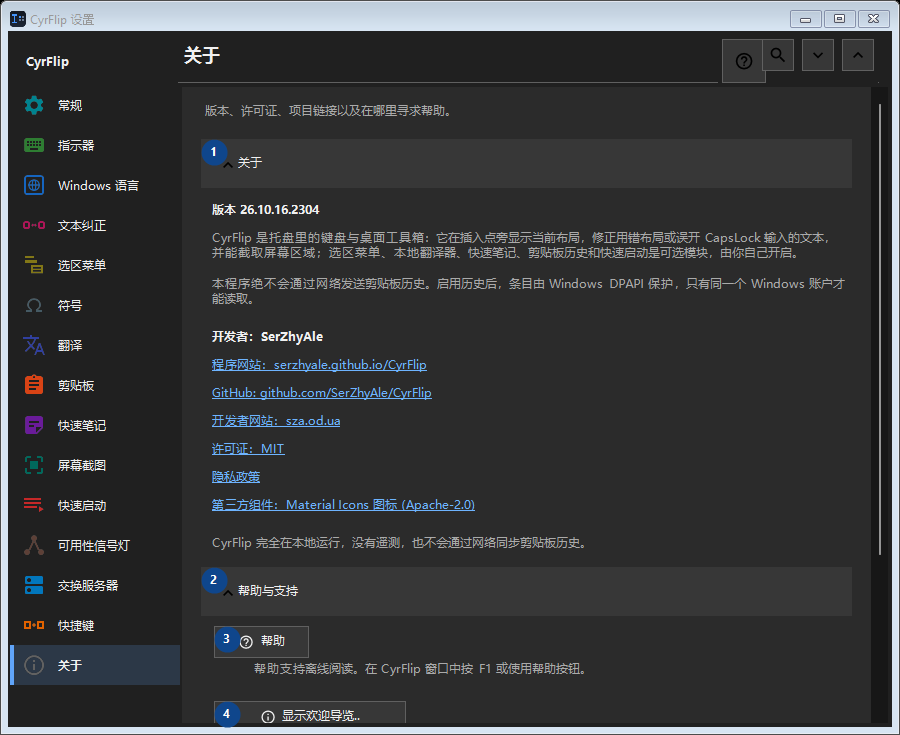

关于
用途
版本、许可证、项目链接以及在哪里寻求帮助。


使用顺序
设置立即生效，无须按固定顺序操作；请使用以下分组。
界面元素
1. 关于
需要执行上述操作时使用此命令。接受前请阅读确认提示。
你的快捷键2. 帮助与支持
需要执行上述操作时使用此命令。接受前请阅读确认提示。
你的快捷键3. 帮助
帮助支持离线阅读。在 CyrFlip 窗口中按 F1 或使用帮助按钮。
你的快捷键4. 显示欢迎导览..
了解并设置 CyrFlip。
你的快捷键5. 诊断插入点位置...
生成一份本地报告，说明 Windows 和 UI Automation 如何识别插入点。仅当标记在某个应用中不显示或位置错误时才需要。
你的快捷键6. 将日志发送给作者..
把 CyrFlip 的日志打包成一个压缩包，并打开一封已附加该文件的给作者的邮件。邮件由您自己发送 - CyrFlip 不会向网络传输任何内容。剪贴板历史绝不会进入压缩包。
你的快捷键